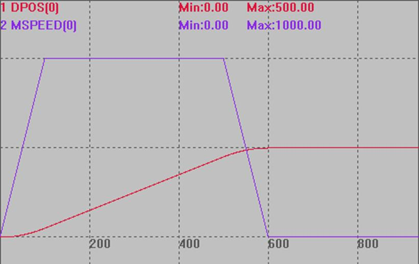

|
类型 |
轴参数 |
|
描述 |
对轴启用MOVEOP精准输出功能，作用在轴组的主轴上。
SYSTEM_ZSET修改的同时会修改当前BASE轴的AXIS_ZSET, 以兼容旧的程序，一般不建议使用SYSTEM_ZSET指令。 设置参数： bit1：1-使用MOVE_OP精确输出功能，0- MOVE_OP原来的方式 bit4：1-对带编码器功能的轴，使用编码器位置的MOVE_OP精准方式 多个编码器轴插补时，使用BASE运动主轴的设置 bit5：1-CANCEL(2)/ RAPIDSTOP(2)急停减速度为DECEL， 0-急停减速度为FASTDEC |
|
语法 |
可读：VALUE=AXIS_ZSET 可写：AXIS_ZSET=VALUE |
|
适用控制器 |
20170517以上固件版本 |
|
例程 |
例一 开启精准输出 BASE(0) ATYPE=1 DPOS=0 SPEED=100 ACCEL=1000 DECEL=1000 AXIS_ZSET(0)=2 '开启MOVE_OP的精准输出功能 MOVE(100) MOVE_OP(0,1) '精准生效，选择输出通道0
例二 开启多个编码器精准输出口 一般4系列有4个通道可以用于精准输出，部分型号有8个，假设设备上有3个点胶工位都要精准输出。 BASE(0,1,2) '选择轴0为主轴 AXIS_ZSET(0)=19 '开启主轴MOVE_OP的编码器精准输出功能 …… BASE(3,4,5) AXIS_ZSET(3)=19 …… BASE(6,7,8) AXIS_ZSET(6)=19 ……
例二 急停减速度选择 BASE(0) DPOS=0 ATYPE=1 UNITS=100 SPEED=1000 ACCEL=10000 DECEL=10000 '减速度设为1000 FASTDEC=100000 '快减减速度设为100000 AXIS_ZSET=32 '减速度选择 TRIGGER '自动触发示波器 MOVE(1000) '当前运动 MOVE(-2000) '缓冲运动 DELAY(500) CANCEL(2) '急停
如下图，不设置AXIS_ZSET的减速度应为100000，设置后减速度为10000  |
|
相关指令 |